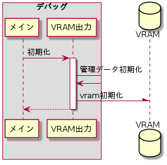
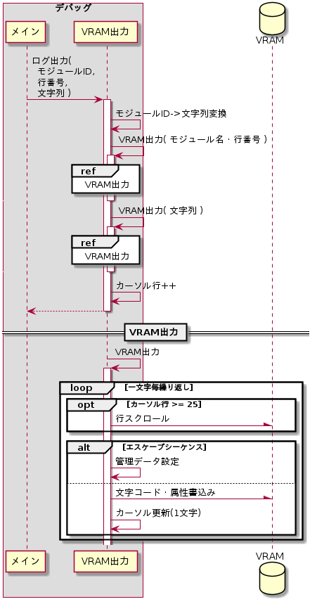

概要
テキストモード3番のVRAM(0x000B_8000)にログ出力を行う。
管理データ
VRAM出力で管理するデータを以下に示す。
管理データ
| # | 管理データ | サイズ (byte) |
説明 | ||||||||||||||||||||||||||||||||||||
| 1 | カーソル行 | 4 | ログ出力先の行インデックス | ||||||||||||||||||||||||||||||||||||
| 2 | カーソル列 | 4 | ログ出力先の列インデックス | ||||||||||||||||||||||||||||||||||||
| 3 | 文字属性 | 1 |
1文字毎にVRAMに設定する文字属性。
|
||||||||||||||||||||||||||||||||||||
初期化
管理データとVRAMを初期化する。シーケンスを以下に示す。

初期化シーケンス
初期化シーケンス
管理データ初期化
管理データを下記の通り初期化する。
管理データの初期値
| # | 管理データ | 初期値 |
| 1 | カーソル行 | 0 |
| 2 | カーソル列 | 0 |
| 3 | 文字属性 | 0x0F |
VRAM初期化
VRAM領域を全て下記の2byteデータで初期化する。
初期化値
| # | データ | サイズ (byte) |
値 |
| 1 | 文字コード | 1 | ' '(スペース) |
| 2 | 文字属性 | 1 | 0x0F |
ログ出力
シーケンスを以下に示す。

ログ出力シーケンス
ログ出力シーケンス
モジュールID->文字列変換
モジュールIDを文字列に変換する。変換はモジュールID一覧を参照のこと。
モジュール名・行番号書込み
下記の通り文字列を生成しVRAMに書込む。
\e[32mXXX-XXXX:LLLL \e[0m
XXX-XXXXにはモジュール名をLLLLには0埋めの行番号を設定する。
行スクロール
カーソル行が25を超えていた場合は、VRAMの2～25行目を1～24行目にコピーし、25行目を全て' '(スペース)と文字属性で初期化する。そしてカーソル行を24に設定する。
エスケープシーケンス処理
下記の通り、エスケープシーケンス毎に管理データの設定を変更する。
エスケープシーケンス毎の管理データ更新
| # | エスケープシーケンス | 管理データ更新内容 |
| 1 | \e[0m | 文字属性の点滅フラグを0に設定 |
| 2 | \e[30m | 文字属性の文字色を明るい黒色に設定 |
| 3 | \e[31m | 文字属性の文字色を明るい赤色に設定 |
| 4 | \e[32m | 文字属性の文字色を明るい緑色に設定 |
| 5 | \e[33m | 文字属性の文字色を明るい黄色に設定 |
| 6 | \e[34m | 文字属性の文字色を明るい青色に設定 |
| 7 | \e[35m | 文字属性の文字色を明るい紫色に設定 |
| 8 | \e[36m | 文字属性の文字色を明るい水色に設定 |
| 9 | \e[37m | 文字属性の文字色を明るい白色に設定 |
| 10 | \e[39m | |
| 11 | \e[40m | 文字属性の背景色を黒色に設定 |
| 12 | \e[49m | |
| 13 | \e[41m | 文字属性の背景色を赤色に設定 |
| 14 | \e[42m | 文字属性の背景色を緑色に設定 |
| 15 | \e[43m | 文字属性の背景色を黄色に設定 |
| 16 | \e[44m | 文字属性の背景色を青色に設定 |
| 17 | \e[45m | 文字属性の背景色を紫色に設定 |
| 18 | \e[46m | 文字属性の背景色を水色に設定 |
| 19 | \e[47m | 文字属性の背景色を白色に設定 |
| 20 | \e[5m | 文字属性の点滅フラグを1に設定 |
| 21 | \e[7m | 文字属性の背景色を文字色に、文字色を背景色に設定 |
| 22 | \e[90m | 文字属性の文字色を黒色に設定 |
| 23 | \e[91m | 文字属性の文字色を赤色に設定 |
| 24 | \e[92m | 文字属性の文字色を緑色に設定 |
| 25 | \e[93m | 文字属性の文字色を黄色に設定 |
| 26 | \e[94m | 文字属性の文字色を青色に設定 |
| 27 | \e[95m | 文字属性の文字色を紫色に設定 |
| 28 | \e[96m | 文字属性の文字色を水色に設定 |
| 29 | \e[97m | 文字属性の文字色を白色に設定 |
文字コード・属性書込み
文字コードと文字属性の2byteをVRAMのカーソル行・列インデックスに書込む。カーソル行と列インデックスが指すVRAMアドレスは下記の通りに算出する。
VRAMアドレス + カーソル行 × 80 × 2 + カーソル列 × 2
カーソル更新(1文字)
カーソル列をインクリメントする。カーソル列が80となった場合は0に設定し、カーソル行をインクリメントする。